library(workflows)
library(parsnip)
library(tidyverse)
library(tidymodels)
library(glue)
library(tidyclust)
library(scales)
library(GGally) # for ggparcoor
library(gganimate)
library(ggradar)
library(ggrepel)
library(patchwork)
library(tidytext)
library(gtsummary)
# our fitted models, created in chap 11
load("data/fitted_kmeans_mods.RData")
# mukeys, cluster assignments, and soil properties
# note these are the untransformed soil prop values
prop <- read_csv("data/mukey_cluster_assignments_and_soilprops.csv")11 Explore clusters
Based on the model metrics in Section 15.11 , k = 4, 6, or 9 seem like reasonable places to start. These are local maxima in the average silhouette metric. For the Calinski-Harabasz index, we see a steady decrease from 2-7, then similar index values for 7-9, then decreasing again. In general higher is better, which would suggest something in the lower range. Really don’t have a clear elbow in the WSS plot, I could see an argument for the 8-11 region being where it starts to flatten out more.
11.1 Extract Centroids
Recall that these are still the standardized values.
cent_df <- mods %>%
mutate(centroids = map(km_fit, ~extract_centroids(.x))) %>%
select(n_clust, centroids) %>%
unnest(centroids) # debated whether to also rescale here, as I did below for the radar plots?
head(cent_df)# scaled 0-1 for radar plot
sc_cent <- cent_df %>%
mutate(across(.cols = c(3:12),
.fns = ~round(rescale(.x,to = c(0,1)), 1)))11.2 About individual clusters
We can also extract information about how many members (unique MUKEYs) have been allocated to each cluster, and the sum of squared error within each cluster. This tells us about how how “cohesive” each cluster is (lower SSE means points are closer to their cluster centroid, more tightly packed).
iclust <- mods %>%
mutate(clust_stat = map(km_fit, ~within_cluster_sse(.x))) %>%
select(n_clust, clust_stat) %>%
unnest(clust_stat) %>%
mutate(.cluster = str_replace_all(.cluster, "er_", ""))
head(iclust)11.3 Cluster Stats Overall
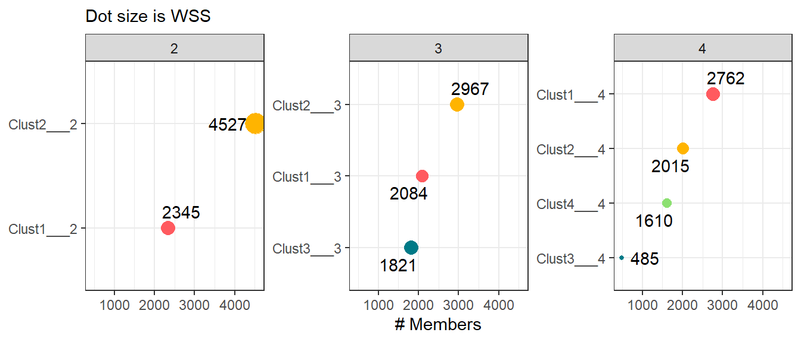
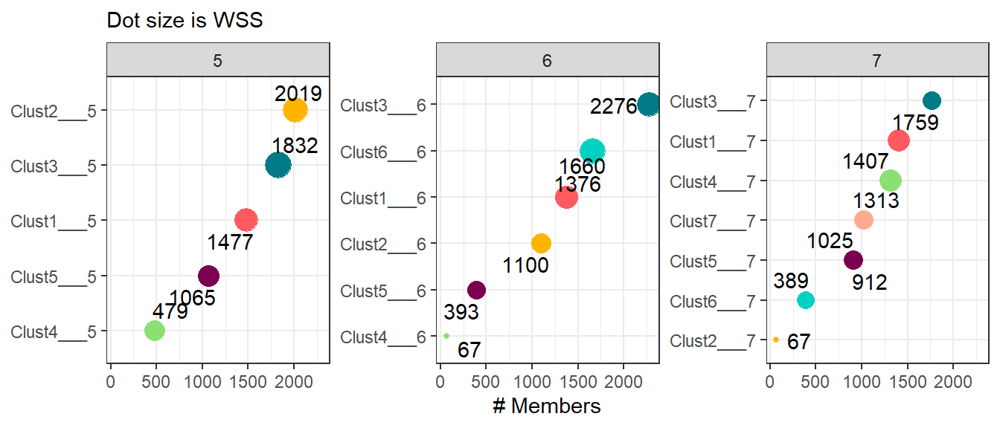
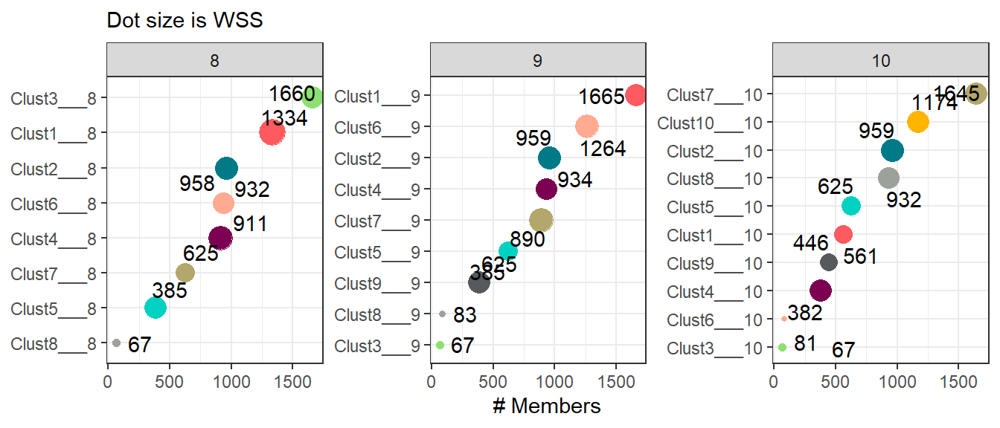
11.4 2 Clusters “Split the difference”
- Cluster 1: sandy, high Ksat and low AWC. Low OM and clay.
- Cluster 2: high clay, CEC, OM, AWC, LEP.
coord2 <- parcoor_plot(nclust = 2)
stat2 <- plot_cluster_stats(2)
coord2 + stat2 + plot_layout(widths = c(2,1), guides = "collect")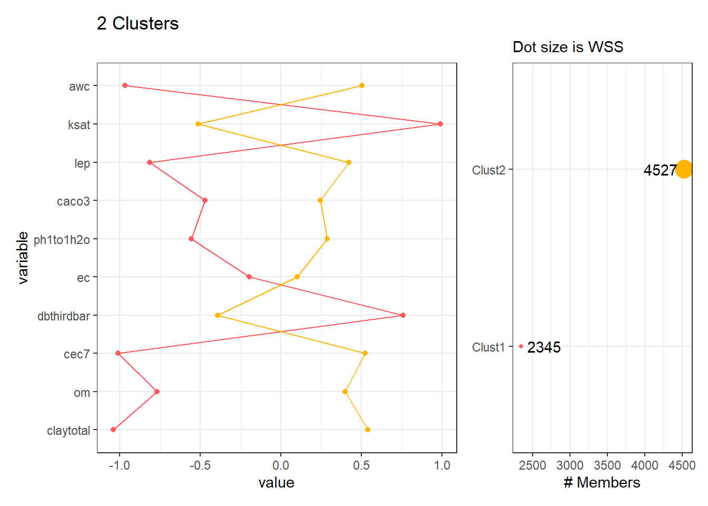
create_summary_table("k_2")| Characteristic | Cluster_1, N = 2,3451 | Cluster_2, N = 4,5271 |
|---|---|---|
| claytotal | 10 (4) | 25 (8) |
| om | 2.40 (1.30) | 5.84 (8.29) |
| cec7 | 10 (4) | 24 (16) |
| dbthirdbar | 1.46 (0.10) | 1.30 (0.19) |
| ec | 0.02 (0.19) | 0.13 (0.42) |
| ph1to1h2o | 6.50 (0.51) | 7.01 (0.58) |
| caco3 | 0.7 (2.1) | 4.0 (5.7) |
| lep | 1.18 (0.50) | 3.08 (1.92) |
| ksat | 48 (36) | 9 (7) |
| awc | 0.14 (0.04) | 0.20 (0.03) |
| 1 Mean (SD) | ||
radar_plot(2)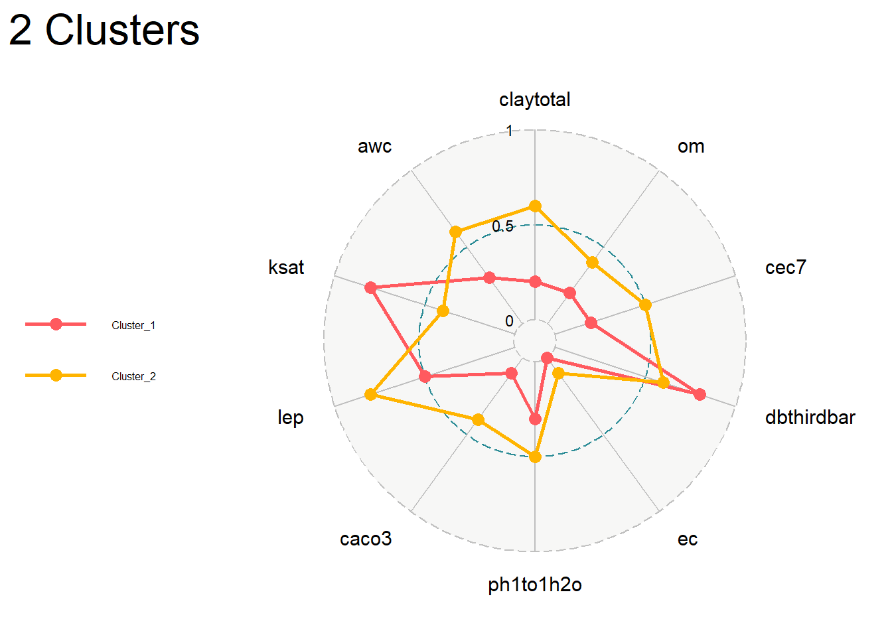
prop %>%
select(k_2, claytotal, om, ph1to1h2o, caco3) %>%
pivot_longer(-k_2) %>%
ggplot() +
geom_violin(aes(x = name, y = value, color = k_2)) +
facet_wrap(vars(name), scales = "free")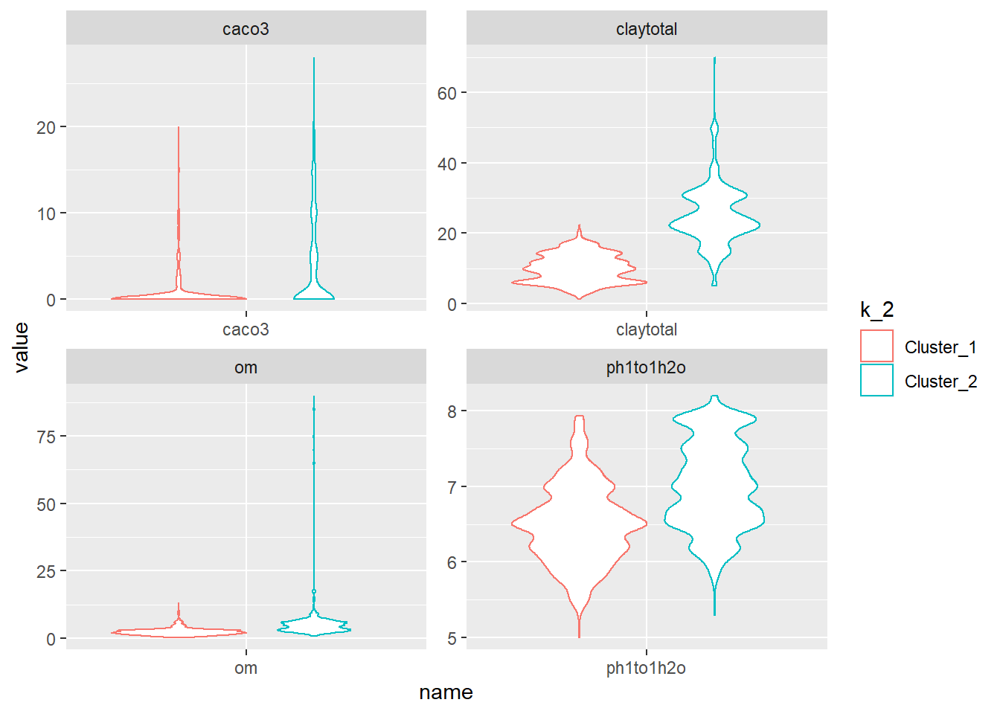
11.5 3 Clusters “Distinguishing NW?”
coord3 <- parcoor_plot(nclust = 3)
stat3 <- plot_cluster_stats(3)
coord3 + stat3 + plot_layout(widths = c(2,1), guides = "collect")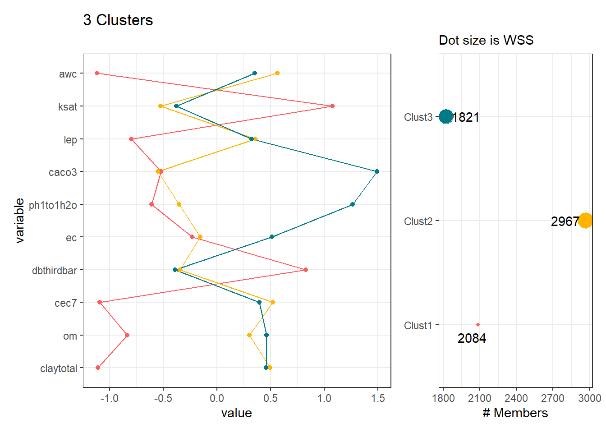
radar_plot(3)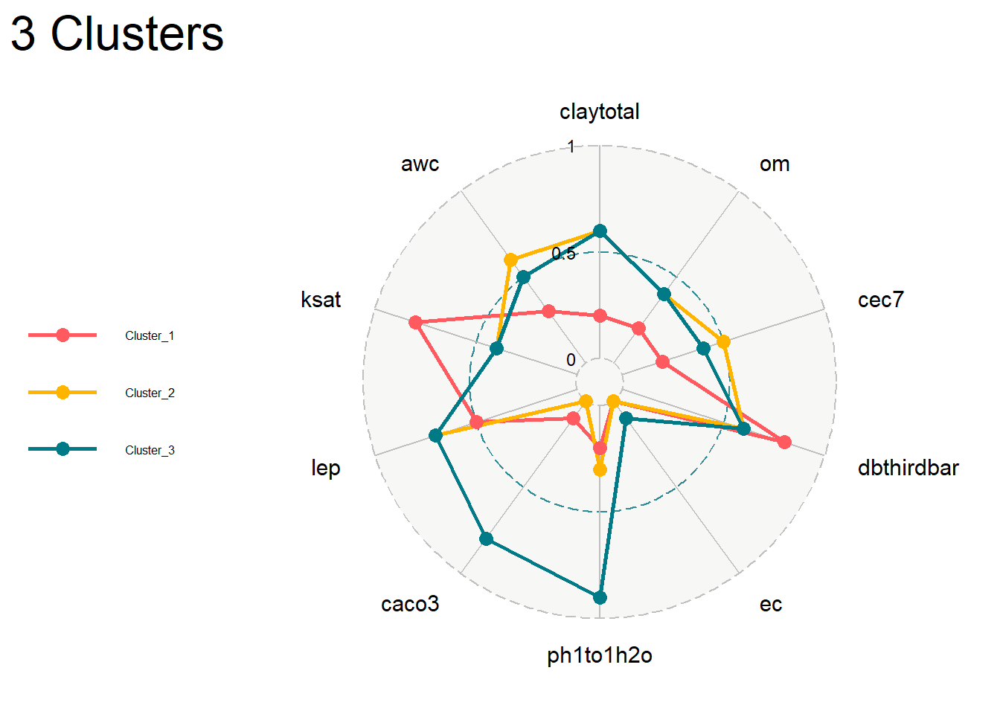
create_summary_table("k_3")| Characteristic | Cluster_1, N = 2,0841 | Cluster_2, N = 2,9671 | Cluster_3, N = 1,8211 |
|---|---|---|---|
| claytotal | 9 (4) | 24 (8) | 24 (9) |
| om | 2.30 (1.21) | 5.82 (9.79) | 5.50 (4.01) |
| cec7 | 10 (4) | 25 (19) | 22 (10) |
| dbthirdbar | 1.47 (0.10) | 1.31 (0.18) | 1.30 (0.18) |
| ec | 0.01 (0.12) | 0.04 (0.20) | 0.28 (0.60) |
| ph1to1h2o | 6.47 (0.49) | 6.62 (0.36) | 7.60 (0.30) |
| caco3 | 0.4 (1.4) | 0.3 (0.9) | 9.9 (4.9) |
| lep | 1.18 (0.48) | 2.99 (1.84) | 2.94 (2.05) |
| ksat | 52 (36) | 9 (6) | 11 (11) |
| awc | 0.13 (0.03) | 0.21 (0.04) | 0.19 (0.03) |
| 1 Mean (SD) | |||
11.6 4 Clusters
coord4 <- parcoor_plot(nclust = 4)
stat4 <- plot_cluster_stats(4)
coord4 + stat4 + plot_layout(widths = c(2,1), guides = "collect")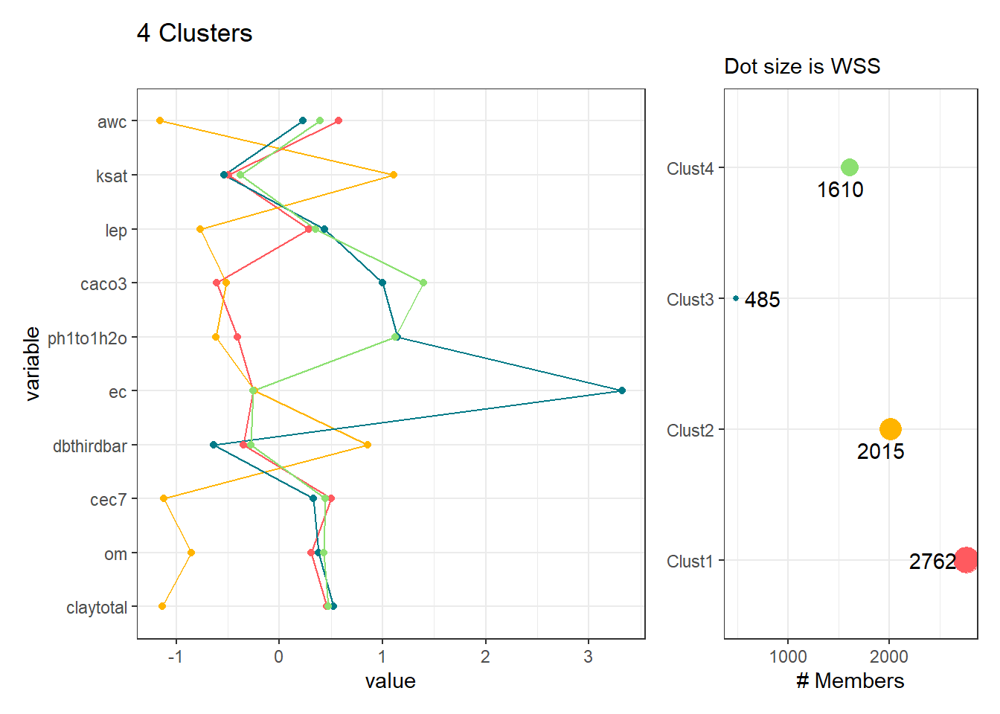
radar_plot(4)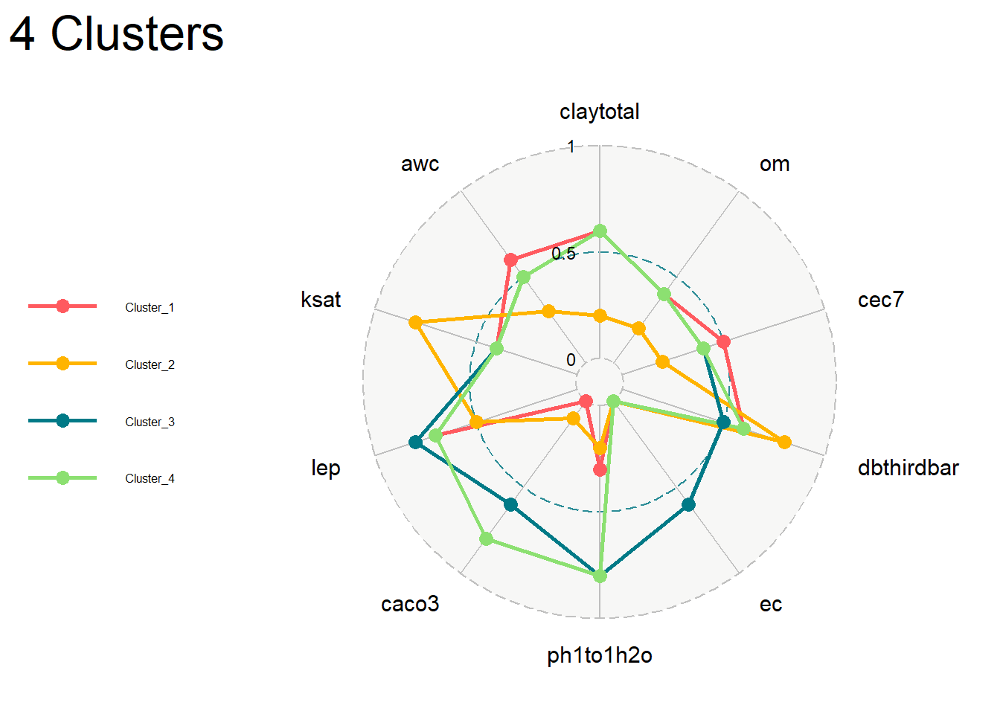
11.7 5 Clusters “EC artefacts? EC-OM-Clay spread”
coord5 <- parcoor_plot(nclust = 5)
stat5 <- plot_cluster_stats(5)
coord5 + stat5 + plot_layout(widths = c(2,1), guides = "collect")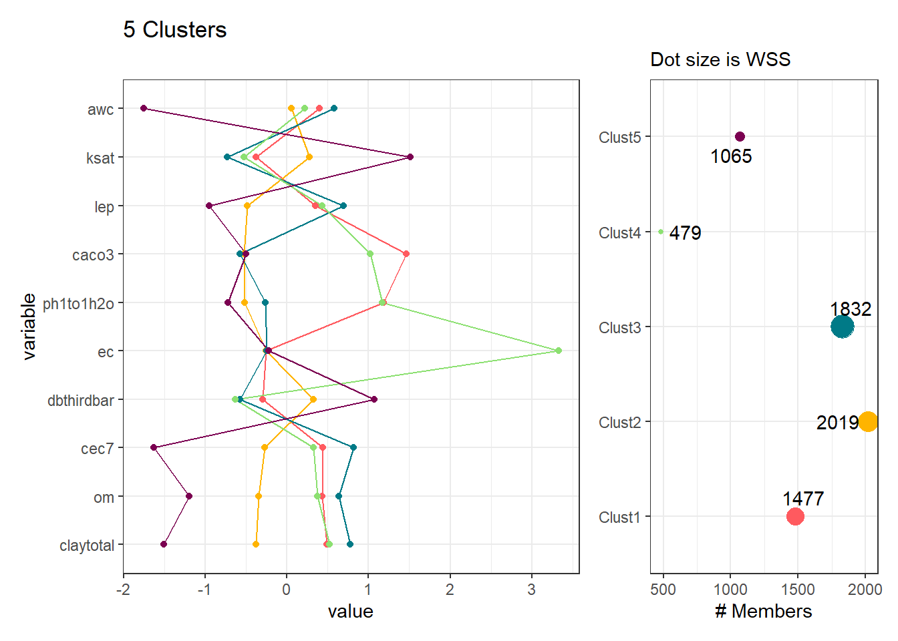
I wonder if the difference between Cluster 1 and 5 here is actually being driven by the EC values we set to zero in the NW part of the state? It seems to be the only major thing distinguishing those 2 clusters.
radar_plot(5)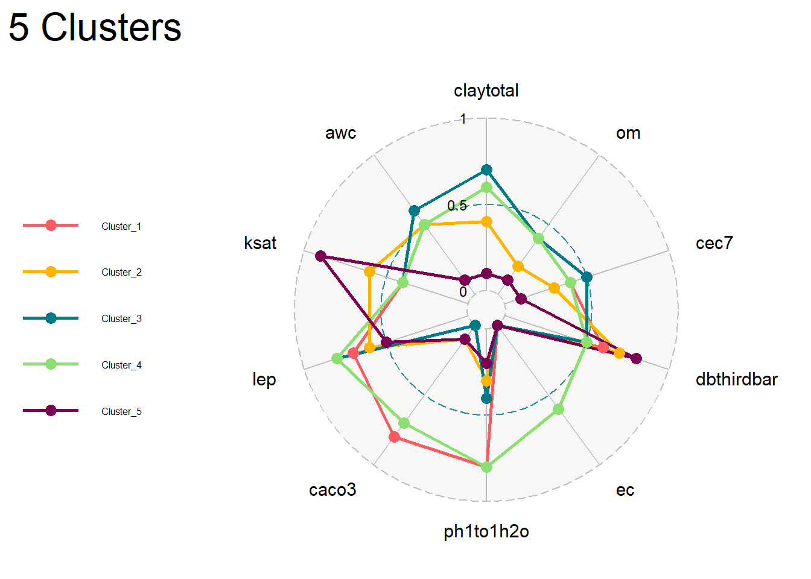
11.8 6 Clusters “Histosols break free”
What strikes me about this one is Cluster 2, it seems like those might be histosols that broke away into their own cluster? Cluster 2 very high OM, CEC, very low bulk density, high AWC.
coord6 <- parcoor_plot(nclust = 6)
stat6 <- plot_cluster_stats(6)
coord6 + stat6 + plot_layout(widths = c(2,1), guides = "collect")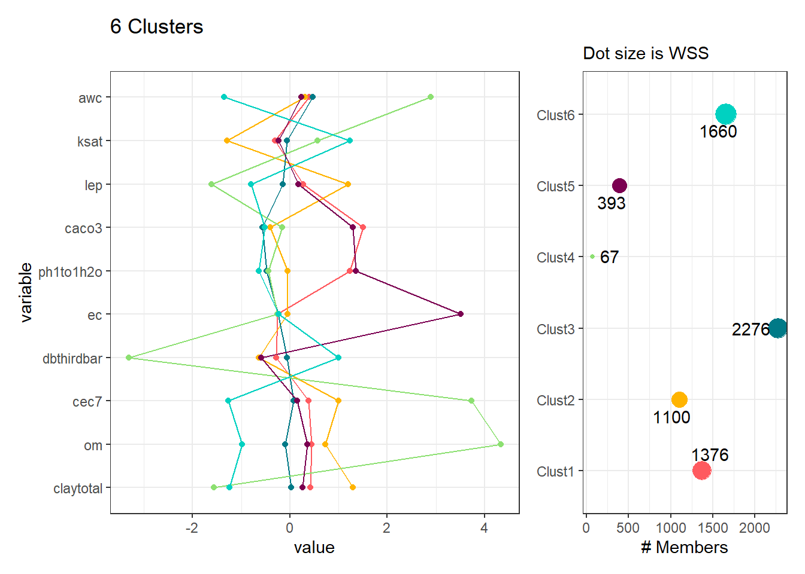
radar_plot(6)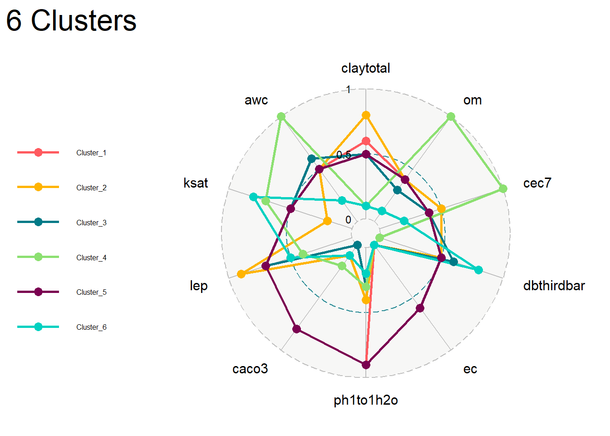
create_summary_table("k_6")| Characteristic | Cluster_1, N = 1,6601 | Cluster_2, N = 2,2761 | Cluster_3, N = 1,3761 | Cluster_4, N = 1,1001 | Cluster_5, N = 3931 | Cluster_6, N = 671 |
|---|---|---|---|---|---|---|
| claytotal | 9 (3) | 19 (5) | 23 (7) | 34 (7) | 22 (10) | 7 (4) |
| om | 2.07 (1.11) | 3.58 (1.63) | 5.43 (3.13) | 5.99 (1.87) | 4.73 (1.38) | 68.17 (17.64) |
| cec7 | 9 (3) | 17 (4) | 21 (7) | 29 (6) | 19 (8) | 141 (29) |
| dbthirdbar | 1.49 (0.09) | 1.36 (0.08) | 1.31 (0.20) | 1.27 (0.12) | 1.28 (0.09) | 0.30 (0.22) |
| ec | 0.01 (0.09) | 0.01 (0.07) | 0.00 (0.00) | 0.07 (0.26) | 1.35 (0.56) | 0.00 (0.00) |
| ph1to1h2o | 6.45 (0.50) | 6.55 (0.35) | 7.58 (0.30) | 6.81 (0.38) | 7.66 (0.37) | 6.57 (0.47) |
| caco3 | 0.4 (1.4) | 0.3 (1.0) | 10.0 (4.9) | 0.8 (2.0) | 9.3 (5.8) | 1.4 (2.4) |
| lep | 1.16 (0.47) | 1.96 (0.92) | 2.67 (1.38) | 5.04 (2.17) | 2.69 (2.09) | 0.59 (0.30) |
| ksat | 59 (37) | 13 (8) | 11 (9) | 4 (3) | 15 (16) | 24 (6) |
| awc | 0.12 (0.03) | 0.20 (0.03) | 0.20 (0.02) | 0.19 (0.02) | 0.19 (0.03) | 0.39 (0.04) |
| 1 Mean (SD) | ||||||
11.9 7 Clusters
coord7 <- parcoor_plot(nclust = 7)
stat7 <- plot_cluster_stats(7)
coord7 + stat7 + plot_layout(widths = c(2,1), guides = "collect")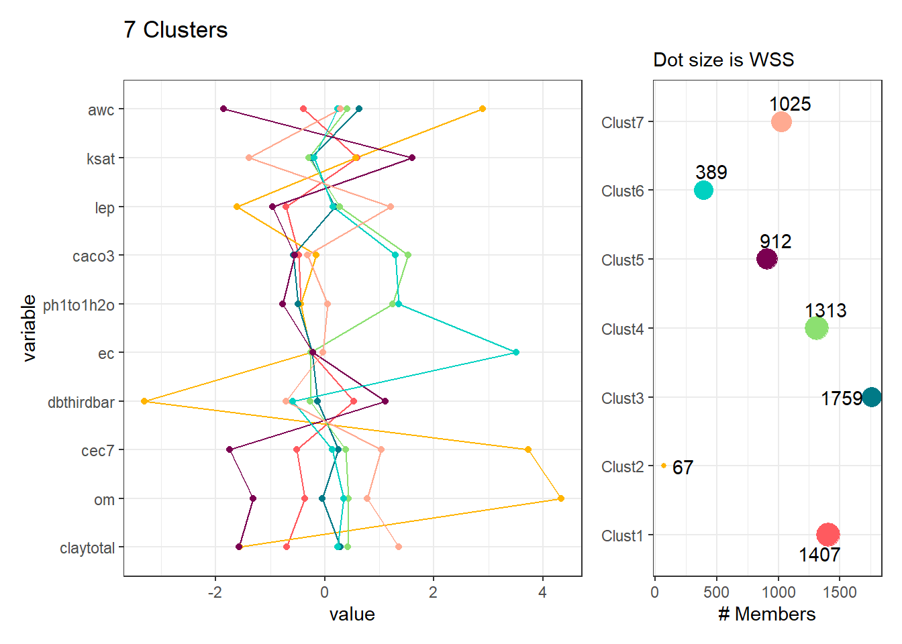
radar_plot(7)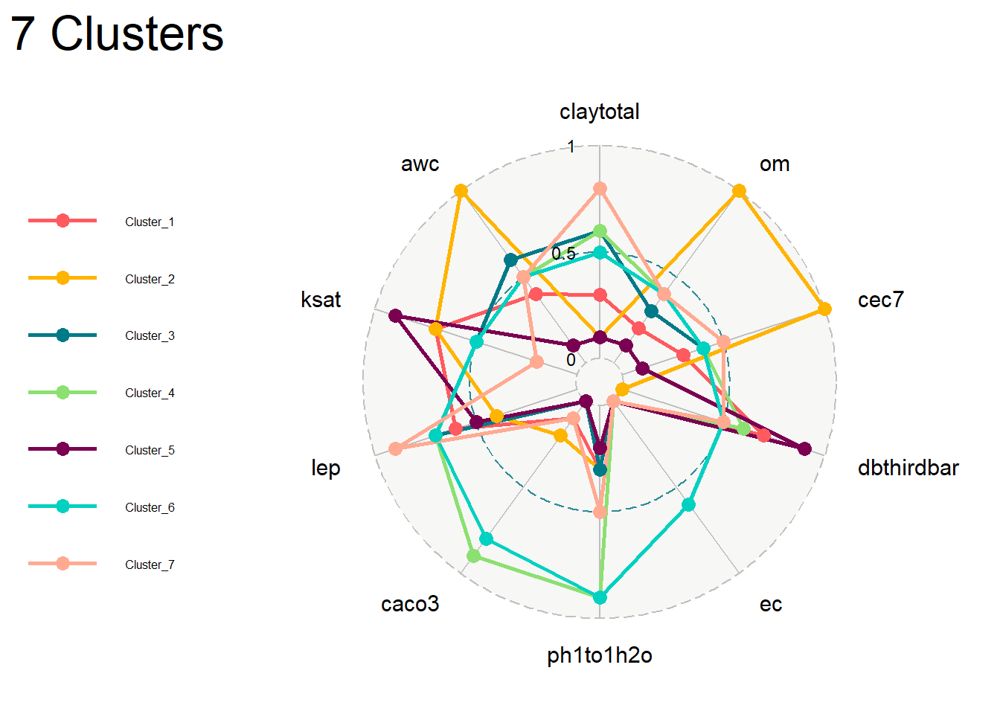
11.10 8 Clusters
coord8 <- parcoor_plot(nclust = 8)
stat8 <- plot_cluster_stats(8)
coord8 + stat8 + plot_layout(widths = c(2,1), guides = "collect")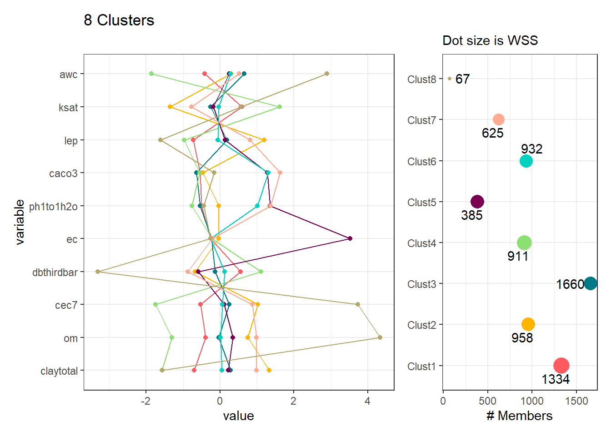
radar_plot(8)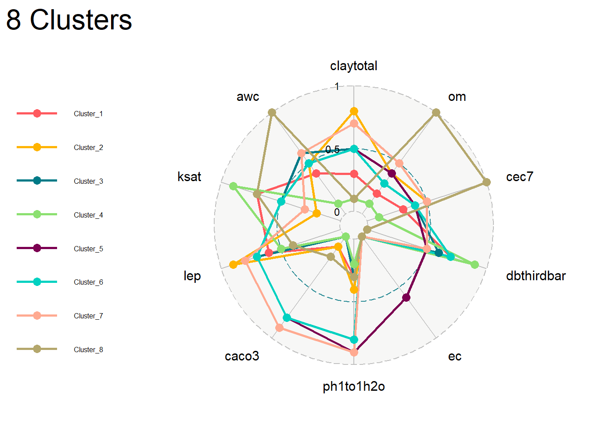
11.11 9 Clusters
coord9 <- parcoor_plot(nclust = 9)
stat9 <- plot_cluster_stats(9)
coord9 + stat9 + plot_layout(widths = c(2,1), guides = "collect")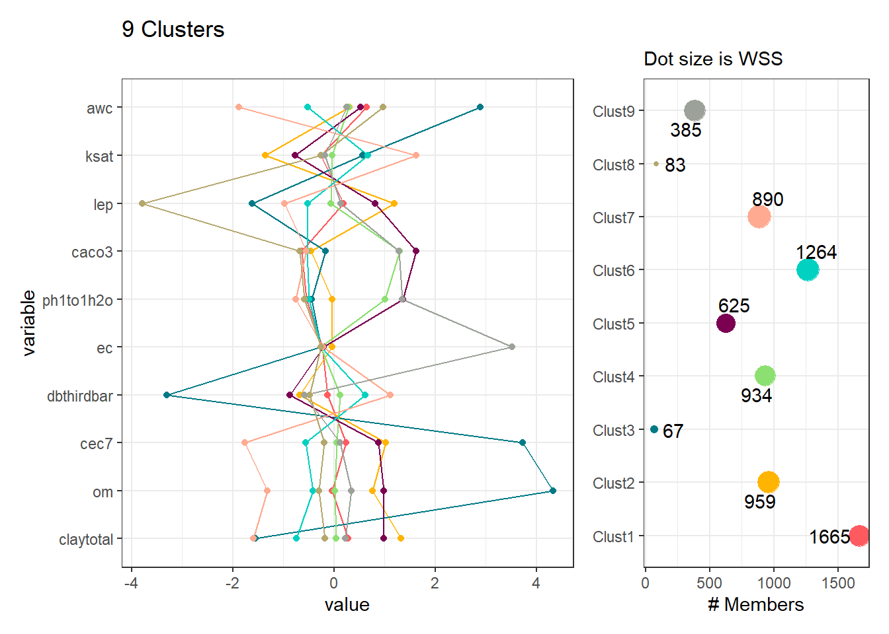
radar_plot(9)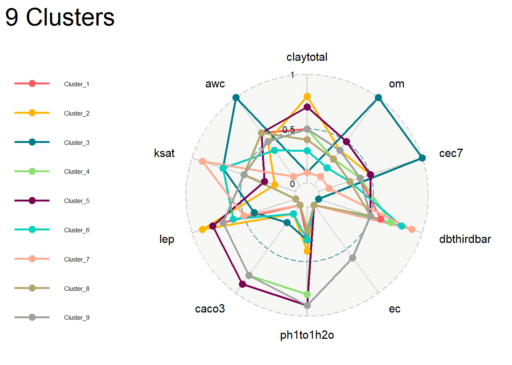
11.12 10 Clusters
coord10 <- parcoor_plot(nclust = 10)
stat10 <- plot_cluster_stats(10)
coord10 + stat10 + plot_layout(widths = c(2,1), guides = "collect")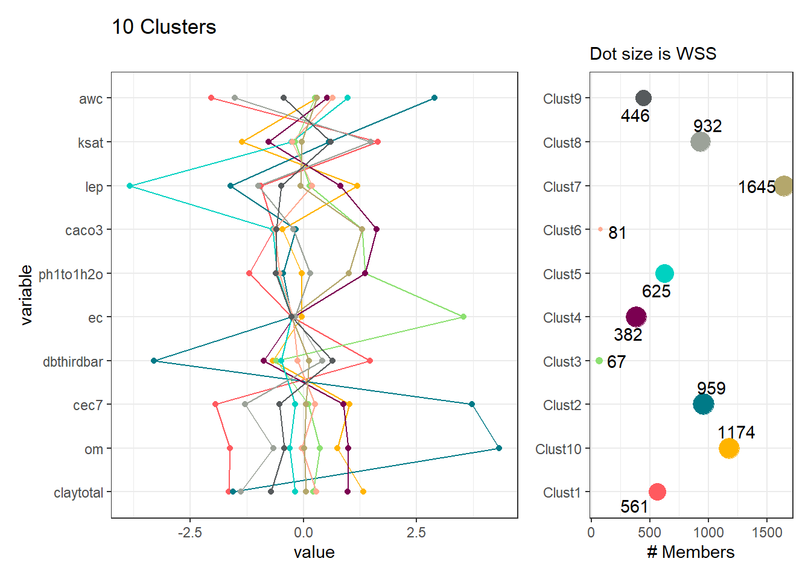
radar_plot(10)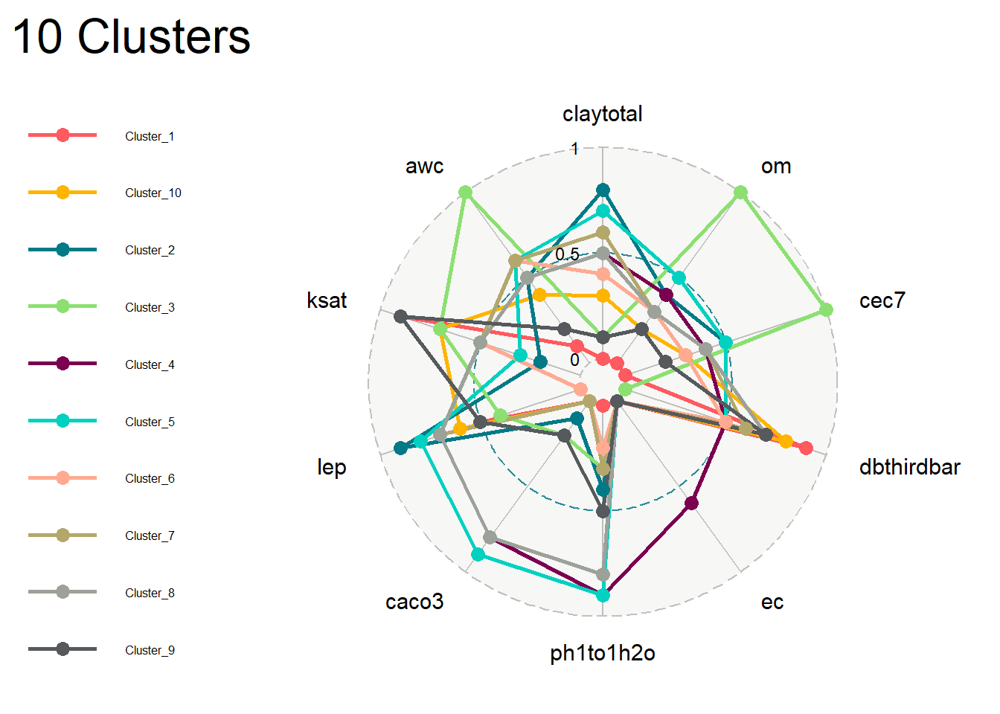
11.13 11 Clusters
coord11 <- parcoor_plot(nclust = 11)
stat11 <- plot_cluster_stats(11)
coord11 + stat11 + plot_layout(widths = c(2,1), guides = "collect")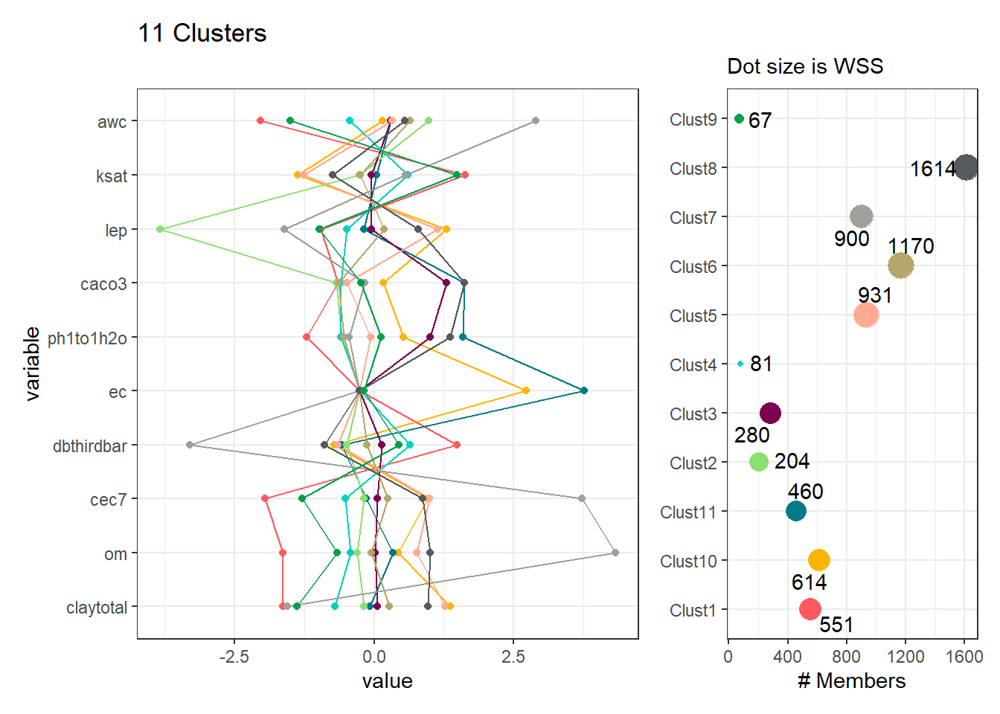
radar_plot(11)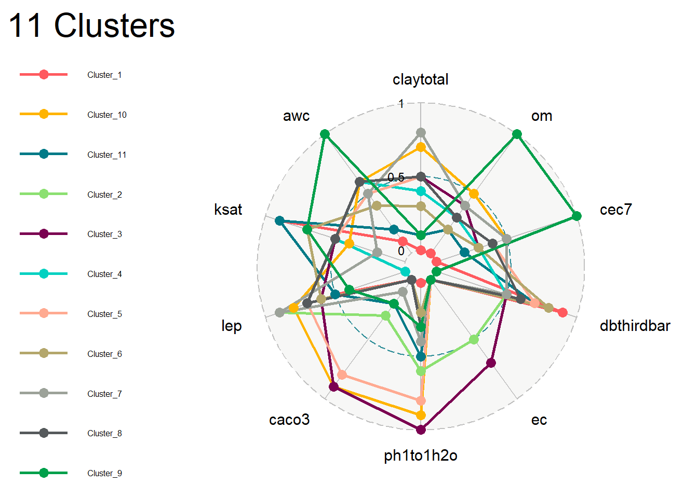
11.14 Different plot example
Another way to compare soil properties between clusters. Only really works with a small number of clusters
# the centroids are all on a standardized scale,
# so we can plot all the vars together to compare
# the properties of each cluster
cent_df %>%
filter(n_clust == 4) %>%
select(-n_clust) %>%
pivot_longer(cols = -.cluster,
names_to = 'variable',
values_to = 'value') %>%
ggplot() +
geom_col(aes(x = value, y = variable)) +
facet_wrap(vars(.cluster), nrow = 1) +
geom_vline(xintercept = 0, color = "blue") +
expand_limits(y = 13.5) +
theme_bw()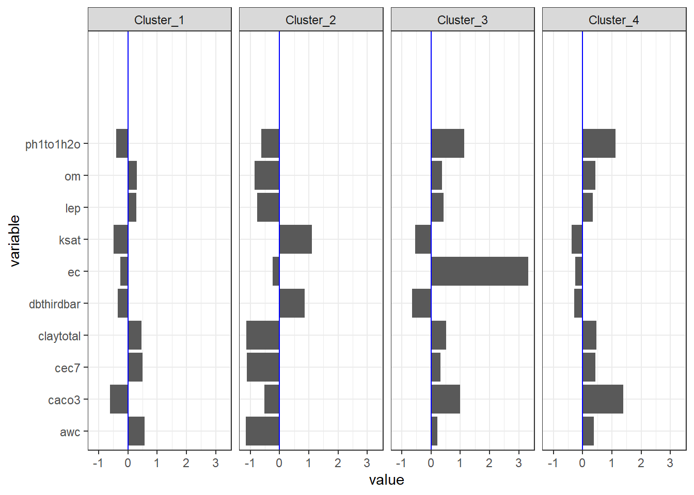
# +
# geom_label(data = clust_stat,
# aes(
# x = 0.25,
# y = 11.5,
# label = glue("n:{n_members}")
# ),
# size = 2.5) +
# geom_label(data = clust_stat,
# aes(
# x = 0.25,
# y = 12.5,
# label = glue("wss:{round(wss,0)}")
# ),
# size = 2.5) +
# theme_bw()